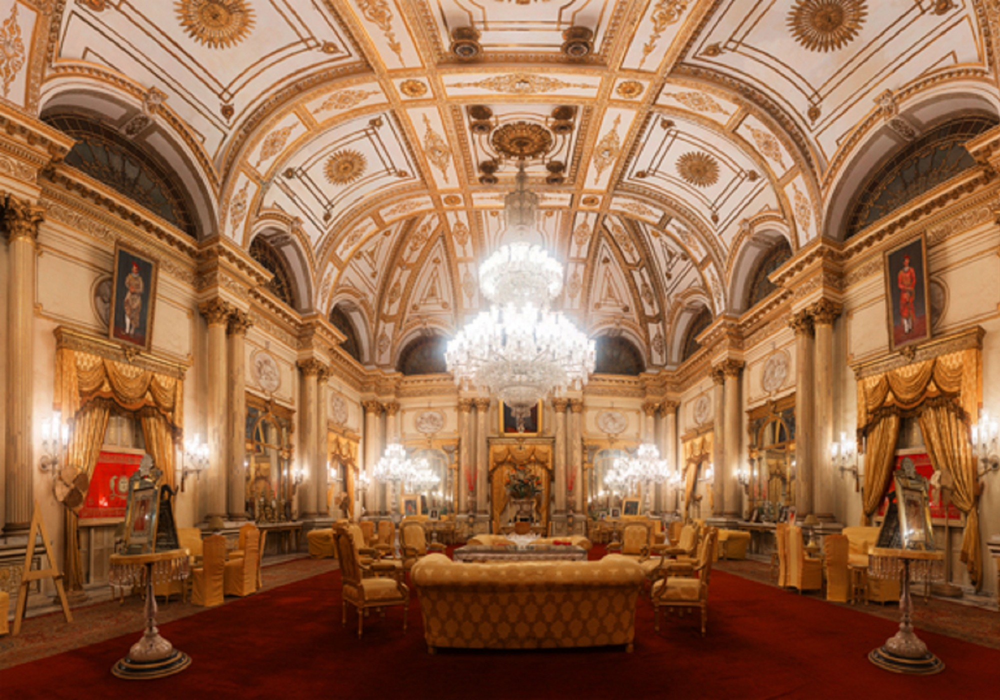
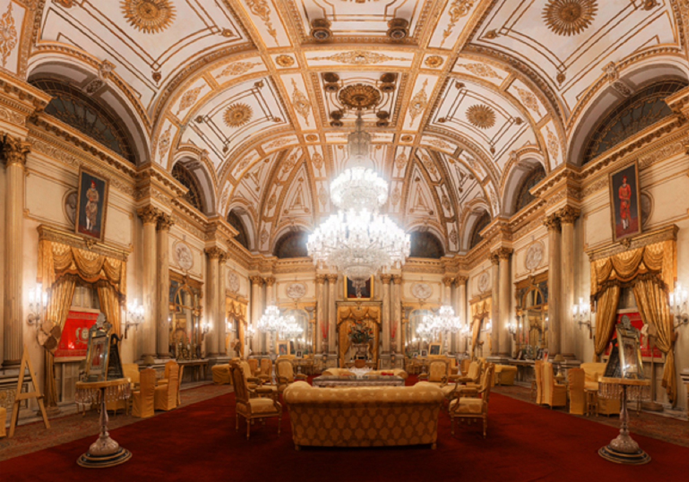

Gwalior is a historical city in the heart of India, situated in the State of Madhya Pradesh. The Ancient Indian Classical School of Music “Dhrupad” was finetuned here and spread to various parts of India to acquire local flavours. Known as “The City of Music”, the legendary musician Tansen also belonged to Gwalior and became one of the nine jewells of
Emperor Akbar’s court. Tansen innovated many complex & beautiful ‘Ragas’. Thereafter the city responded so well to music that few members of every family took classical music as their life time passion. Daily practice sessions in each household used to give out-of-the-world feeling to the city. Just 3-4 decades ago joint families crumbled to growing economic pressures and musicians became jobless in independent India with no patronage from any quarter. Gwalior still has very sensible and sensitive audience of music and musicians find it very satisfying to perform here and receive proper responses from the audiences.
The city has perhaps the richest musical tradition among all the cities in this great country starting from Tansen, Baijubabra, Hassukhan, Haddukhan, Krishnarao Pandit, Bala Saheb Puchhwale, Chote Bhayya Puchhwale, Bande Ali Khan, Shankar Rao Pandit and to come to the living legends Malini Rajurkar, Ustad Amjad Ali Khan, the list is endless.
.jpg) 

Gwalior has beautiful large Fort Palace built during Tomar dynasty who were connossieurs of Art & Music. Exquisite stone works can still be found here inspite of immoral plundering by vested interests. Agra is 110 kms from Gwalior and 1½ hours journey by express trains and is easily reachable to Tajmahal. Khajuraho group of temples depicting all facets of life 4 hours journey by road. Mitawali & Padavali has a group of 108 ruines of temples and is 20 kms from Gwalior. Orchha is 100 kms from Gwalior and is a treat for weekend trips as the village still carries old time feel with palaces, temples, cenotaphs and ruins along the banks of Betwa river.
Modern Gwalior is new educational hub and a bustling city with a population of over 1.6 million. It is centrally located 317 kms from Delhi and 400 kms from Bhopal. It is well connected with Delhi, Bhopal, Indore, Mumbai, Pune, Chennai, Bangalore and Hyderabad by trains, road and by air from New Delhi and Jabalpur.
Most famous landmarks include the living Palaces of Scindias - Jai Vilas Palace, the tombs of the famous musician Tansen & his mentor teacher Mohammad Ghaus.
ITM itself has visitors from all over the region to see its vast collection of sculptures and paintings as well its most applauded Amphitheater. The industrial history of the Gwalior dates back to later part of 19th Century when Birlas established their Textile business. The well known Grasim & Gwalior suiting brand was born in this region. Gwalior has kept pace with time making it emerge as a vibrant city of Madhya Pradesh. The City has attracted major corporate houses like Cadbury, Kodak, SRF, J.K. Industries, Crompton Greaves, Flex Chemical and Atlas.
The Fort: There is much to see in and around the fort. Guides can be hired at the gate. Every evening light-and-sound show is held at the open-air theater outside the Man Singh Palace at fort.
Jain Sculptures:There are many impressively big Jain Sculptures, which were originally cut into the cliff faces in the 15th century fort. They were defaced during Mughal time. The Images are in five main groups.
Archaeological Museum: Within the Gujri Palace is the Museum. It houses an extensive collection of Hindu and Jain sculptures and copies of the Caves frescos.
Jai Vilas Palace and Scindia Museum:Though the Scindia family still dwells in this Palace, a part has been converted into a museum. The museum houses ostentatious items such as Belgian cut glass furniture, stuffed tigers, a Rolls Royce on rails, a German bubble car, a life-size marble statue of Leda and a silver railway that carried brandy and cigars around the dining table. The main Durbar hall with its giant chandeliers is captivating.
Tighara Lake: Approx. 20 kms from the city of Gwalior is huge lake where water sports are available on nominal payment apart from being a nice place for picnics in monsoon season.
Motimahal Palace: A place which was turned into a Govt. Office in Independent India has beautiful painted ceilings and walls, recently renovated by INTACH in its original grandeur.
Chambal Safari: Dolphin & Crocodiles are breed and can be seen in Chambal river by Chambal Safari boats run by MPSTDC.